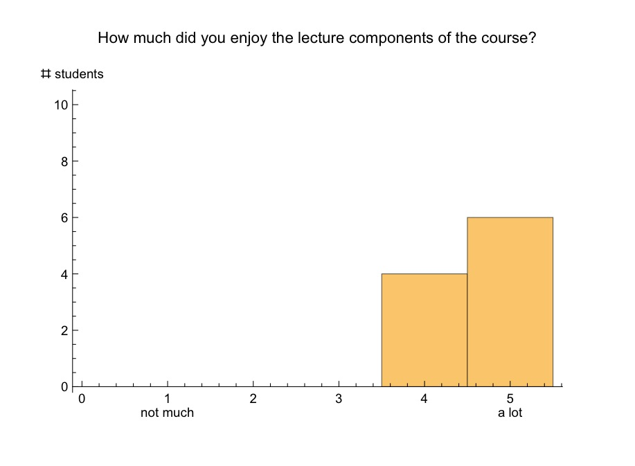
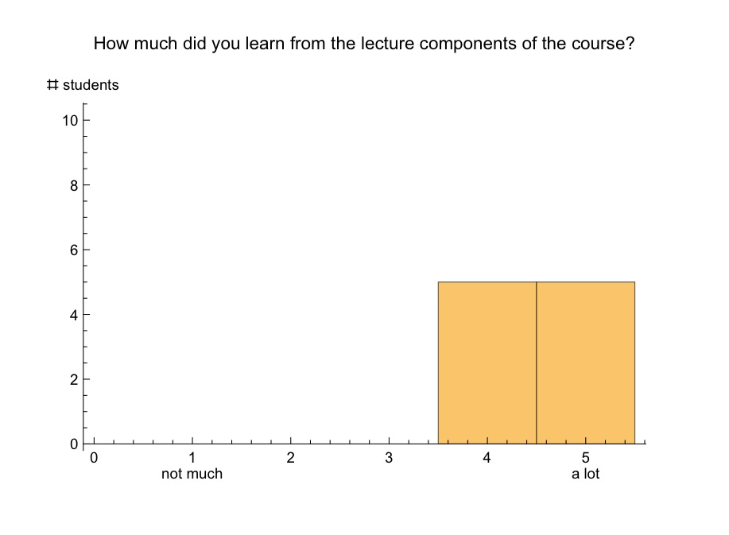
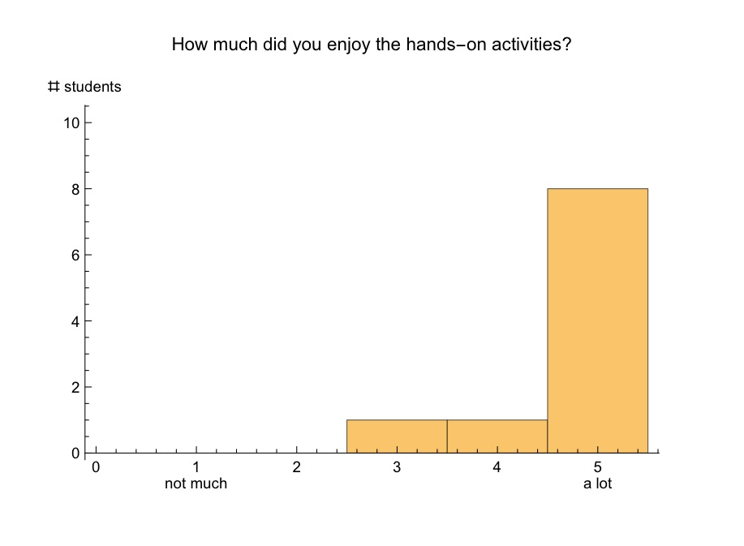

A6: Student Feedback¶
Student feedback from my outreach program “School of Scientific Thought”.
|  |  |
|  |  |
What did you like most about your SST experience?
- I was able to learn to program and use actual robots to do it.
- The application of coding and information on control theory, as well as the usement of technology in everyday life.
- The learning
- I learned more about science and met new people.
- Hands on programming and working with the robots.
- Everything it was fun.
- Getting to learn how to operate the robots.
- Meeting new people.
- Learning the concepts.
- I really liked the kind instructors and the great food offered after every class.
What was the most interesting topic you covered in class?
- Everything to be honest, converting bits and bytes, as well as programming on java.
- Control theory, java, realterm
- To me the most interesting topic was the converting of regular numbers into the same amount but in 0+1s
- The control theory and java.
- Actually programming the robots.
- Programming using Java.
- How to stabilize the beam at a 90 degree angle.
- Control.
- The most interesting topic we covered for me was schematics and how it can apply to a physical system.
If you were to take this class again, what suggestions would you have for improvement?
- Be able to have the classes longer.
- A hands on example by the teachers first.
- I don’t know.
- To use other programs beside JAVA.
- A little more time working with the robots.
- None, the time was not all too many so their was nothing that they could be done.
- Get an understanding of how the insides of a computer can translate code.
- I would just suggest a larger of classes of 8-10 weeks.
What did you like about the instructor’s teaching style?
- I liked how he was able to explain complicated concepts in a simple way.
- They explained everything clearly and to the point, they also used examples.
- They helped you and actually explained what you didn’t get in a friendly way.
- I liked that they would let us ask questions and did not make it so different.
- They both were very clear and conAnd were able to answer any questions we had.
- The relaxed teaching style.
- I like his power pointsw with exmaples to get a much easier explanation.
- Quick to the point but with some supplementary stuff thrown in.
- Don’t know exactly.
- They were both very real and upfront with us and always allowed us to have a variety of experience.
How could the instructor improve on their teaching?
- They did a great job teaching.
- Perfect/more hands on activities.
- I don’t know.
- The instructor did a good job.
- From what I experienced they both did very well.
- They did the best they could in the time provided.
- Going step by step on the programs for the laptops to help the student understand how to set up.
- Was very good so I don’t know what there is to be improved.
- I was just not sure how to organize or interpret the coding concepts well enough to implement them extensively.